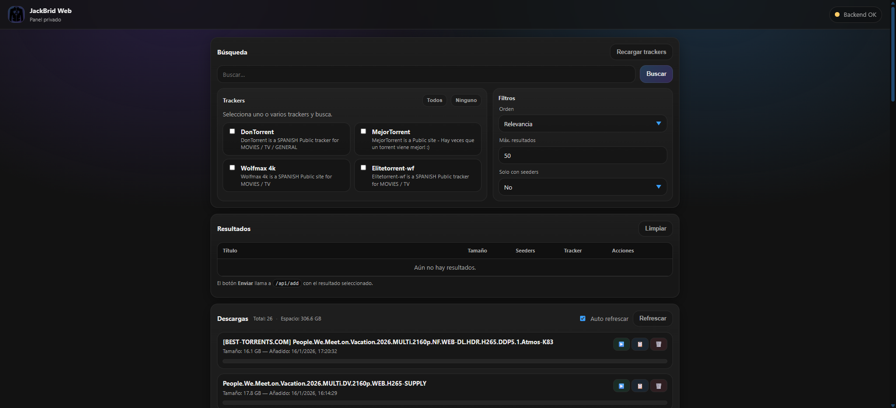
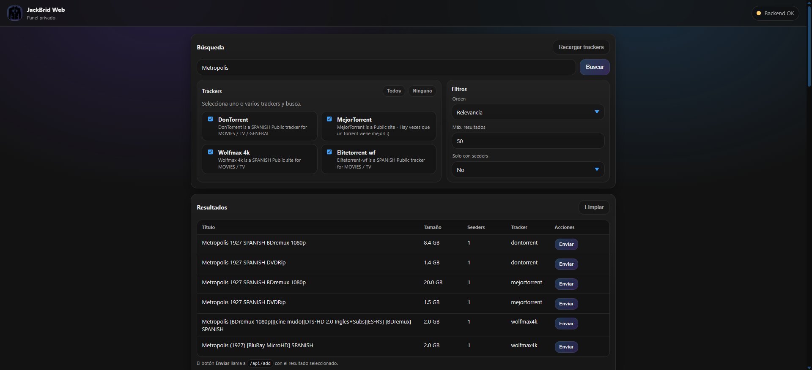

Búsqueda de Torrents¶
Aprende a buscar contenido de forma efectiva en JackBrid y obtener los mejores resultados.
Interfaz Principal¶
Vista General¶
Al abrir JackBrid en http://localhost:8998, verás la interfaz principal:

Secciones de la Interfaz
La interfaz está dividida en tres secciones principales:
- Búsqueda (arriba) - Selección de trackers, campo de búsqueda y filtros
- Resultados (medio) - Torrents encontrados en tus búsquedas
- Descargas (abajo) - Elementos añadidos a AllDebrid listos para reproducir o descargar
Indicadores de Estado¶
En la esquina superior derecha verás:
- Backend OK: Conectado correctamente a Jackett y AllDebrid
- Backend Error: Problema de conexión o API Key inválida
Paso 1: Seleccionar Trackers¶
Selección de Trackers
- Marca los trackers donde quieres buscar
- Puedes seleccionar uno o varios simultáneamente
- Más trackers = más resultados, pero búsqueda más lenta
Recomendación:
- Para películas: 1337x, YTS, RARBG
- Para series: EZTV, ThePirateBay
- Para música: ThePirateBay, Rutracker
Paso 2: Escribir la Búsqueda¶
Consejos de búsqueda:
✅ Buenas búsquedas:
❌ Búsquedas poco efectivas:
Tips:
- Usa el nombre original en inglés
- Añade calidad si buscas algo específico:
1080p,4K,BluRay - Para series, especifica temporada:
S01,Season 1 - Para álbumes, añade formato:
FLAC,320kbps
Paso 3: Configurar Filtros¶
Ordenar por¶
| Opción | Cuándo usar |
|---|---|
| Relevancia | Cuando buscas un título específico |
| Seeders | Para descargas más rápidas |
| Tamaño | Para encontrar versiones 4K o comprimidas |
| Fecha | Para contenido reciente |
Límite de Resultados¶
10- Búsqueda rápida50- Buena variedad (recomendado)100- Búsqueda exhaustivaSin límite- Todos los resultados (puede ser lento)
Solo con Seeders¶
- ✅ Activado: Solo muestra torrents con disponibilidad garantizada
- ❌ Desactivado: Muestra todos, incluso torrents muertos
Recomendación: Déjalo siempre activado.
Paso 4: Explorar Resultados¶

Cada resultado muestra información detallada del torrent:
- Título completo - Nombre del archivo con calidad y formato
- Tamaño del archivo - Tamaño total del torrent
- Seeders y Leechers - Disponibilidad y velocidad esperada
- Tracker de origen - Fuente del torrent
- Botón "Enviar" - Añade el torrent directamente a AllDebrid
Información clave:
- Seeders: Más seeders = descarga más rápida
- Tamaño: Verifica que sea razonable para la calidad
- Tracker: Algunos trackers son más confiables
- Fecha: Contenido reciente suele tener más seeds
Maximizar Resultados¶
1. Usa sinónimos y variaciones:
"The Godfather" → "Godfather"
"Star Wars Episode IV" → "Star Wars A New Hope"
"Breaking Bad" → "BrBa"
2. Prueba con y sin año:
3. Busca por código:
Optimizar Velocidad¶
Selección de trackers:
- ❌ Seleccionar todos (lento)
- ✅ Seleccionar 2-3 específicos (rápido)
Límite inteligente:
- Primera búsqueda: 20-30 resultados
- Si no encuentras: ampliar a 50-100
Evitar Problemas¶
1. Torrents falsos:
- ❌ Tamaño sospechoso (película 4K de 200 MB)
- ❌ Muy pocos seeders (< 5)
- ❌ Título con muchas keywords spam
2. Errores de AllDebrid:
- Torrent muerto → Buscar alternativa con más seeds
- Límite excedido → Esperar 24 horas
- Error de hash → Torrent corrupto, usar otro
Próximos Pasos¶
-
Gestión de AllDebrid
Cómo manejar tus descargas
-
Reproducción
Ver tu contenido descargado
-
Trucos y Consejos
Optimiza tu experiencia